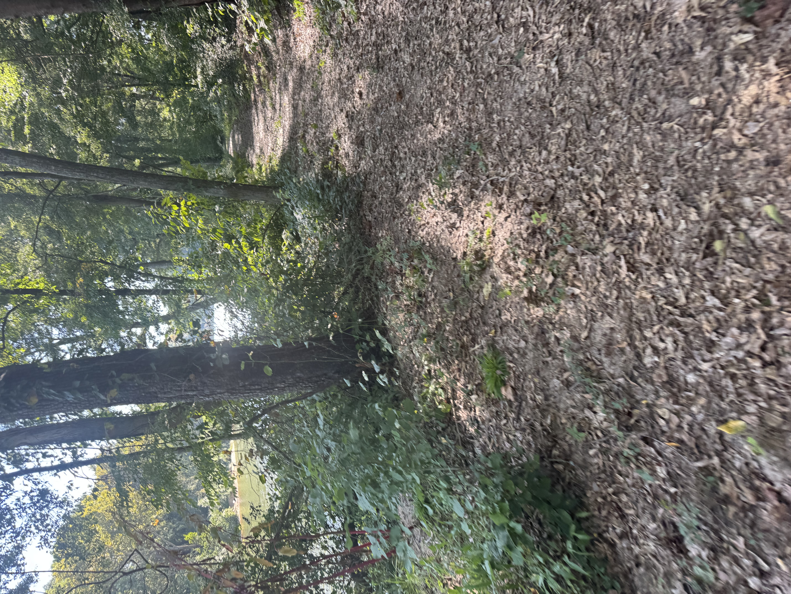

About Me
Like I said before, my name is Danny Zared Yax-Paramo, a current junior particpating in the Advanced Technology Academy in Caldwell Appplied Sciences Academy. I have enjoyed my time so here in CASA and I hope to continue to learn more here so that I can be able to have the opportunities needed to reach where I want to be. I picked this academy because I wanted to learn more about the uses of technology and how to use certain programs. I wish to one day develop my own game, though I understand that I need to learn a whole lot more to be ale to do so.
I also love sports. My two main sports include swimming and running, which I enjoy a lot. Swimming brings out the competetive side of me and helps me push myself to reach higher levels of skill and speed. The reason I love running is because the trails I get to run in the different races I participate in. They're always so diverse, some flat, some hilly. I always enjoy the run no matter what. Long-distance running is something I enjoy for the calmness in it. I hope to one day run an ultra-marathon, but until then, I will run whatever I can to one day reach that goal
Another interest of mine would be creating my own stories and characters. I've always loved books, mostly fantasy, because of how the author is able to create a whole world that somehow entraps you in it and makes you wonder what will happen next. I try my best to somehow replicate that same feeling, and I hope to maybe one day create a story that others can read and enjoy.
Some other quick interesting things about me are:
- I play the piano
- I love cats
- I love to go on hikes in the mountains
- I enjoy watching musicals and was even part of one myself
- I used to do karate and really enjoyed it

This is a trail of a race I was participating in. It was beautiful.